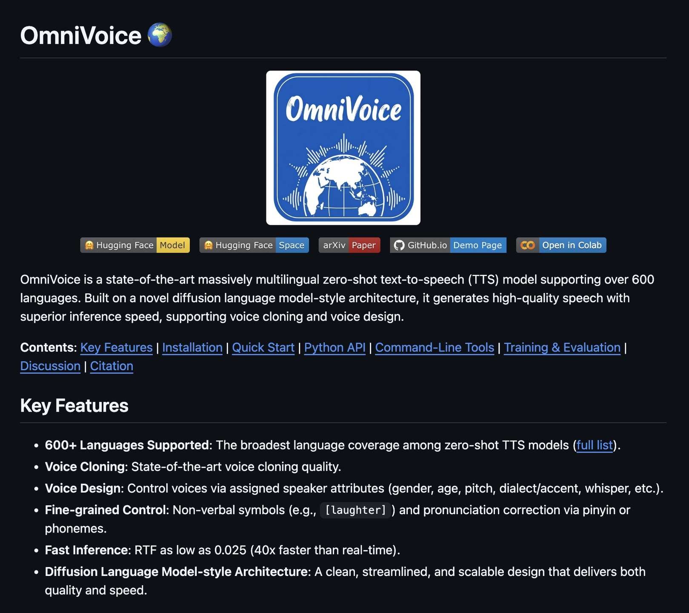

샤오미 OmniVoice, 3초 음성복제로 600개 언어 TTS
Public GitHub Pages export · full wiki body rendered · raw files excluded
샤오미 OmniVoice, 3초 음성복제로 600개 언어 TTS
Source candidate from News-Links/2026-04-21 샤오미 OmniVoice 3초 음성복제 600개 언어/README.md
Source Content
샤오미 OmniVoice, 3초 음성복제로 600개 언어 TTS
원본 Threads 포스트

핵심 요약
Threads 포스트 기준, 샤오미가 발표한 오픈소스 음성 모델 OmniVoice는
단 3초 분량의 음성 샘플만으로 화자의 목소리를 복제하고,
전 세계 600개 언어 수준으로 확장 가능한 음성 생성을 지향한다.
포스트가 강조한 포인트는 3가지다.
- 기존 TTS 파이프라인의 복잡한 연산 단계를 하나로 합쳐 실시간보다 40배 빠른 생성 속도
- 짧은 샘플만으로 가능한 voice cloning
- "영국 억양의 낮은 목소리" 같은 식의 텍스트 기반 음색/스타일 제어
포스트에서 읽히는 의미
이 모델이 흥미로운 이유는 단순 복제보다 제어 가능성에 있다.
즉, 녹음된 원본 화자를 복제하는 것에서 끝나지 않고,
목소리 톤, 억양, 감정 표현, 웃음소리 같은 비언어적 요소까지
텍스트로 설계하는 방향을 보여준다.
이게 사실이라면 다음 영역에 바로 연결된다.
- 개인 맞춤형 TTS
- 다국어 더빙/현지화
- AI 에이전트 음성 퍼소나 고정
- 숏폼 영상/오디오 콘텐츠 자동 생성
눈여겨볼 포인트
1. 3초 샘플 기반 복제
보통 voice cloning은 더 긴 기준 음성이 필요하거나 품질 저하가 크다.
3초 수준으로 의미 있는 결과가 난다면 진입장벽이 크게 낮아진다.
2. 속도 개선
포스트 표현대로라면 "실시간보다 40배 빠른 속도"가 핵심이다.
이 수치가 실제 환경에서도 유지된다면, 배치 생성뿐 아니라
실시간 에이전트 응답, 라이브 더빙, 인터랙티브 음성 UI에도 유리하다.
3. 텍스트 기반 음색 디자인
"영국 억양의 낮은 목소리"처럼 자연어로 음색을 제어할 수 있다면,
프롬프트 기반 음성 디자인이라는 새로운 UX가 열린다.
개발자 입장에서는 복잡한 음성 파라미터 조정보다 훨씬 직관적이다.
실무 관점 체크포인트
이런 모델은 데모가 좋아 보여도 실제 적용 전에 아래를 꼭 확인해야 한다.
- 라이선스, 상업 이용 가능 범위
- 한국어 품질과 억양 안정성
- 짧은 샘플에서의 화자 일관성
- 잡음 환경 녹음에서의 복제 품질
- 악용 방지 장치(워터마크, 탐지, 사용 제한)
자비스 관점 메모
자비스 워크플로우에 붙여보면 다음 실험이 떠오른다.
- TTS voice 고정형 에이전트
- 한국어 원문 → 다국어 음성 브리핑 자동 생성
- 영상 스크립트 → 숏폼 내레이션 자동 제작
- 개인 음성 아카이브 기반 퍼스널 보이스 에이전트
원문 발췌
단 3초짜리 녹음 파일 하나면 전 세계 600개 언어로 내 목소리를 똑같이 복제할 수 있습니다.
샤오미에서 발표한 오픈소스 모델 'OmniVoice'은 기존 텍스트 음성 변환(TTS)의 복잡한 연산 과정을 하나로 합쳐, 실시간보다 40배 빠른 속도로 음성을 생성합니다.
음성 복제뿐만 아니라 "영국 억양의 낮은 목소리"처럼 텍스트로 음색을 디자인하고, 문장 중간에 자연스러운 웃음소리까지 넣을 수 있습니다.
Source Trace
News-Links/2026-04-21 샤오미 OmniVoice 3초 음성복제 600개 언어/README.md